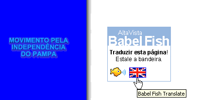

FREE PAMPA INDEPENDENCE MOVEMENT
The Rio-Grandense Republic
The Rio-Grandense Republic (short name "Rio Grande"), also known as Piratini Republic (but this is not an official name), had the independence proclaimed on 11 September 1836 by Antônio de Souza Netto, who assigned Bento Gonçalves da Silva as its first president, but the war independence was started almost one year before, on 20 September 1835, during the revolution which became known as the War of Tatters or Farroupilha Revolution, a ten years long war between the Rio-Grandense Republic and Brazil. Its territory is today under Brazilian occupation under the name of Rio Grande do Sul state. The Rio-Grandense Republic Constitution was approved on 1843.
The Modern Separatist Movement
The Free Pampa Independence Movement, also known as Republic of Pampas, Movement for Pampa Independence, among other names, is a separatist movement created in the early 1990. On 1990s the Free Pampa Movement started a campaign for a public vote for restore the Rio-Grandense Republic independence, and over 1 million signatures were collected, but after stolen by the brazilian political police. The idea for separate is inspired on theFarroupilha Revolution.
|
Country |
|
|
Location: |
|
|
National date: |
September 20 |
|
Independence: |
September 11, 1836 |
|
Recognition: |
The independence is officially recognized by Uruguay, United Kingdom and France, among others. |
|
National Anthem: |
Hino Rio-Grandense (available to download in MP3) |
|
Population: |
11 millions (2007) |
|
Capital: |
Piratini |
|
Languages: |
Portuguese (official), german and italian. |
|
Flag: |
|
|
Coat of Arms: |
Know a bit about us, our culture and land!
Chimarrão or Mate, the typical Gaúcho's drink
More about us:
All Portuguese Language
pages have, at
bottom, an
option for on-line translation to English.
